|
2002年8月15日
新等級15+任務資料
來源：Lineage Playforum
英文翻譯：Lineage Compendium
騎士任務：
在銀騎士村落的酒店後面有一名新NPC韋基(Ricky)，而任務是要殺死一隊黑騎士，完成後可以得到紅騎士頭巾(Red Knight's Bandana)，這防具的防禦是-2。 |
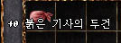 |
妖精任務：
在燃柳村有一名NPC奧蘇(Osu)會要求你收集高級妖魔的魔法書，報酬是體質頭盔（+1體質，-2防，安定值6）或敏捷頭盔（+1敏捷，-2防，安定值6）。 |
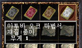 |
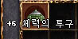
體質頭盔 |
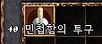
敏捷頭盔 |
王族任務：
假如你擊倒黑騎士，NPC施路(Zero)會給你紅斗篷（+1魅力，-2防）。 |
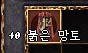 |
法師任務：
在說話之島旅館旁有一名NPC真悟(Jem)，他會要求你收集食屍鬼手指甲，食屍鬼腳趾甲及骷髏頭，去交換一本可作盾牌之用的魔法書(+1智，-2防），Lineage Playforum的記者成功地將此書加到+5，但他懷疑這是他幸運了，安定值應該是4。 |
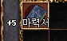 |
遺忘之島探索及發現
來源：Lineage Playforum (2)
英文翻譯：Lineage Compendium
1. 那裡共有4個飛龍重生位置，他們看見的最快重生時間是5分鐘，強化的飛龍比正常的難打，但速度似乎較慢。
2. 以實力比較，強化狼人 = 食人妖精王，強化蛇女 = 2隻烈炎獸，強化食人妖精 = 多羅。島上的獨眼巨人攻擊-58防的妖精約一下50HP。
3. 怪物會掉項鍊，戒指，精餅，濃縮藥水，封印的防具及武器，但沒有金幣。
4. 超過7成的怪物體形是大的，因此在這裡使用武士刀最好不過。
5. 暫時已知阿魯巴和歐熊會掉新戒指，飛龍會掉封印的古代短劍，蛇女會掉水底長靴。
6. 那裡似乎有多於一個NPC商人，售價為：紅水80，橙水400，白水1000，高綠3300，綠水440，每個NPC的售價也不一樣，其中一人賣紅水70。
7. 那裡有不同的怪物區域，假如你將怪物從他們的區域引走，他們是會傳送回家的。
8. 在島上會有牛人，其中一名法師法魅了兩隻，能力值為Lv41，430HP，30MP。
9. 那裡似乎不適合大家孤身上戰。
韓國測試伺服器8月14日更新內容
原文：韓國天堂官方網站公告
英文翻譯：Lineage Compendium
1. 新增了四大職業等級15的任務。
2. 說話之島圖樣重新包裝，同時亦移除了島上的木人區域。
3. 在銀騎士村及說話之島範圍會出現更強的怪物。
4. 在象牙塔增加了活動NPC，他會收取200金幣的費用替玩家使用祝福武器，鋼鐵防護，強化加速術及變身，目前測試伺服器有活動可以變身為牛人，死神，思克巴，巨人或黑騎士。
5. 將死亡掉的經驗值固定為10%。
以下為翻新後說話之島的抓圖：
旅館：
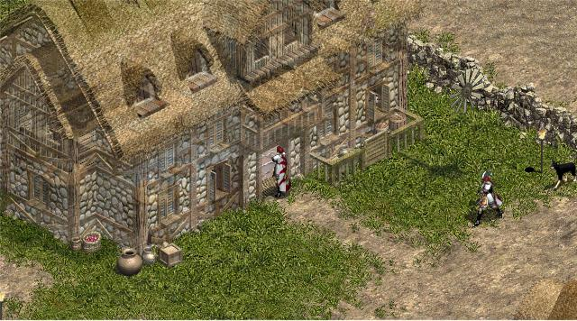
碼頭：
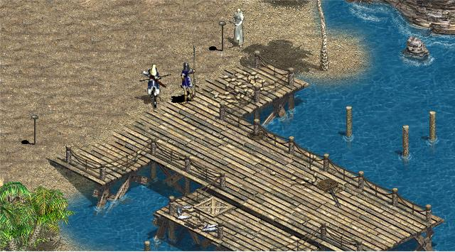
房屋：
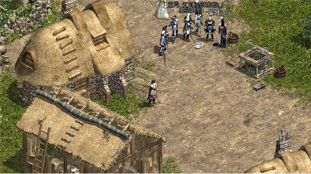
格鬥場：
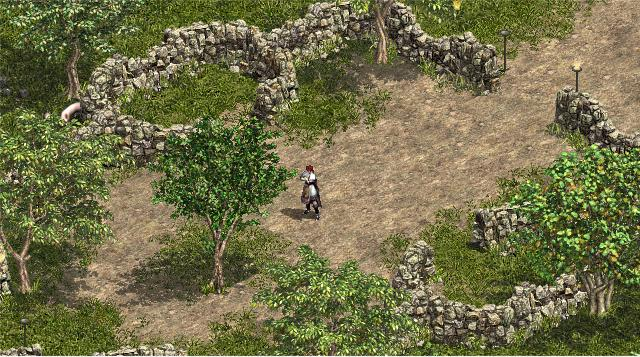
甘特之屋：
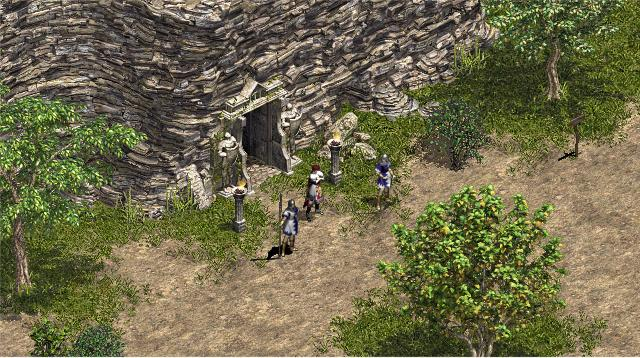
試鍊洞穴：
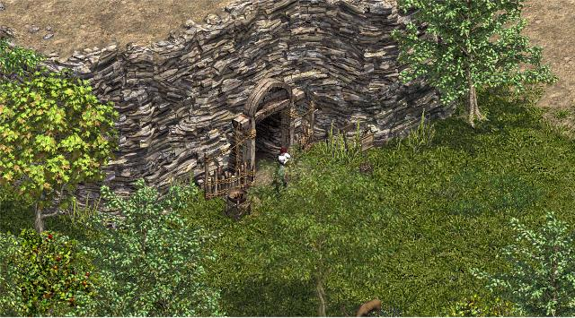 |